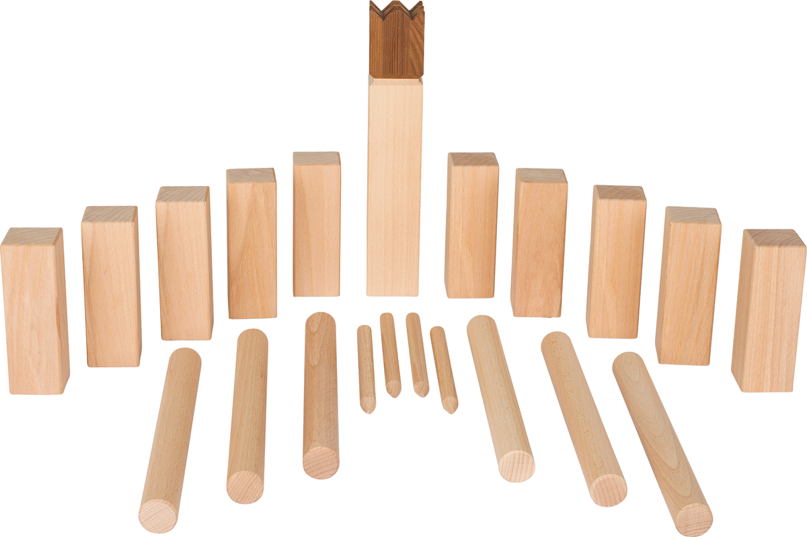

Le jeu de Kubb
Le molky

Lancer d'anneaux

Jeux de société en extérieur
Pour cette sélection de jeux de société en extérieur, nous vous proposons trois jeux d'adresse fabriqués en bois. Ces jeux sont à jouer à deux ou par équipes, ils permettent d'améliorer la cohésion du groupe et de créer un esprit d'équipe. Adaptés aux enfants, adolescents et adultes, ces jeux sont idéaux pour démontrer votre habileté et votre force.